Recovered session evidence / Io
Kīlauea patera
Kīlauea’s collapsed summit becomes a patera: measured terraces, authored lava activity, simulated sulfur deposits.
Original notes and credits
Capture and comparison archive
Original filenames preserve round and view context. These are rendered prototypes, not source photographs.

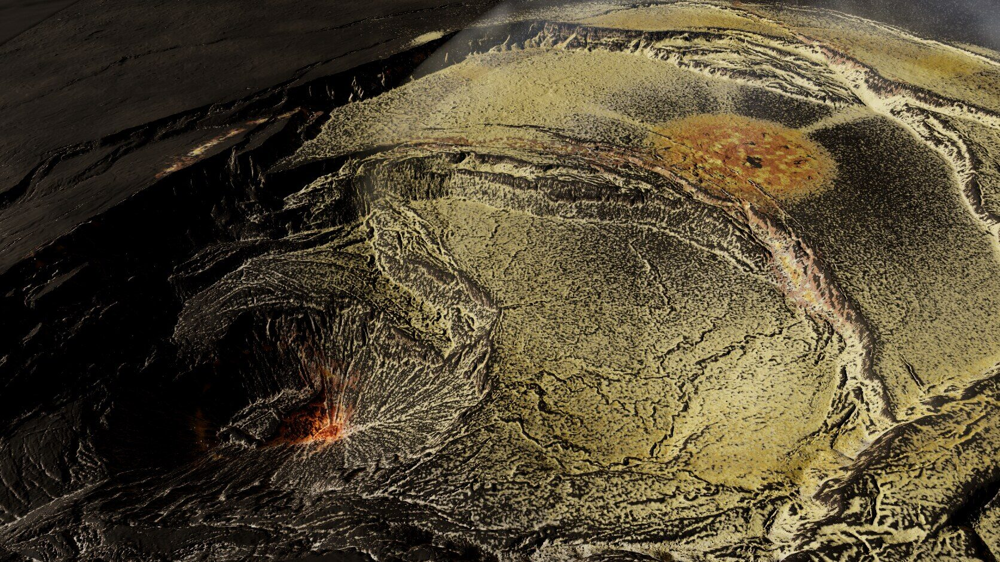

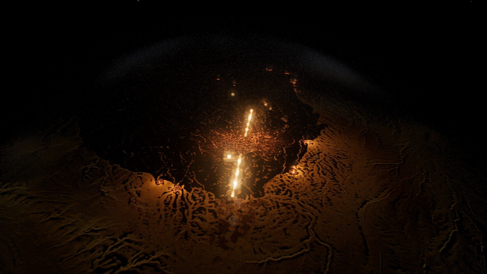

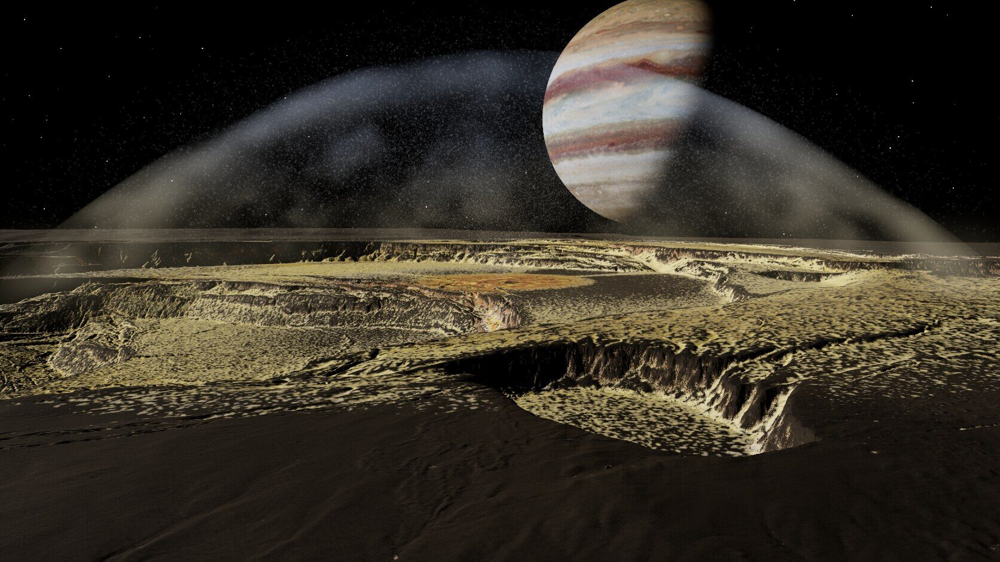

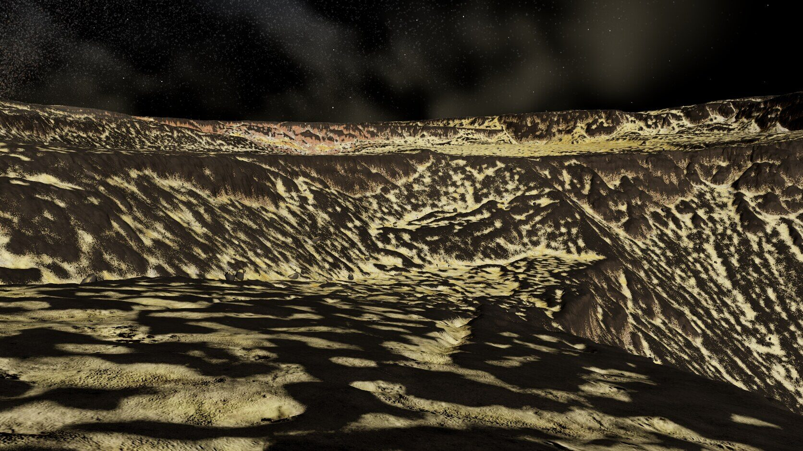

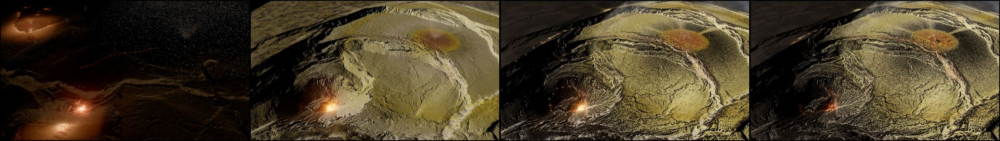

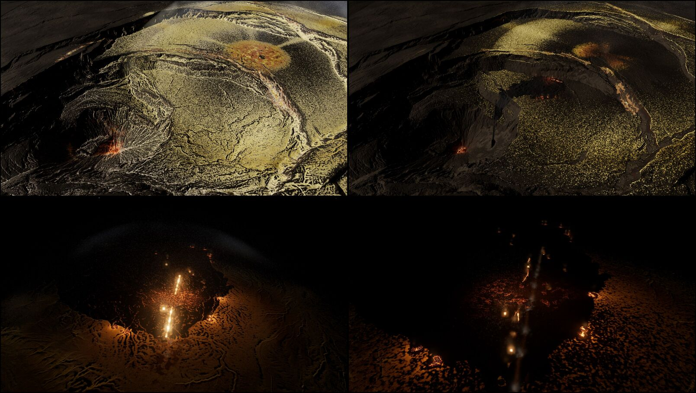

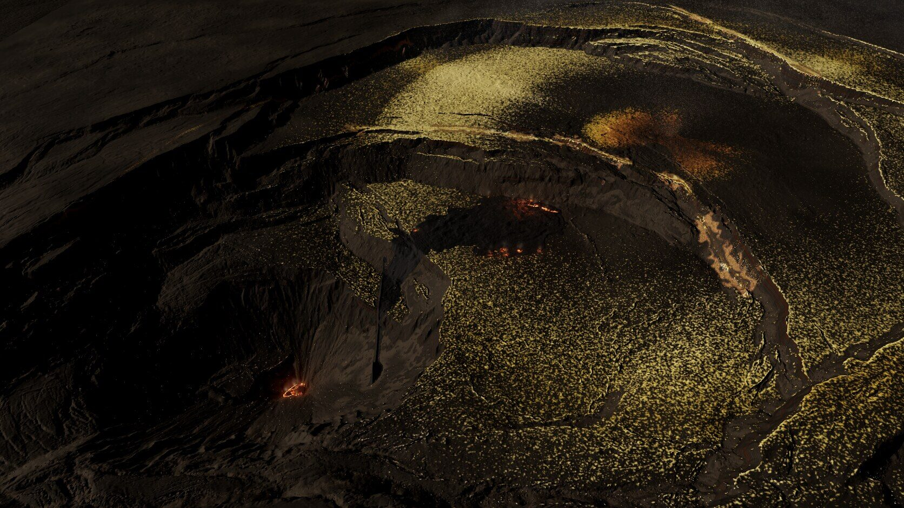

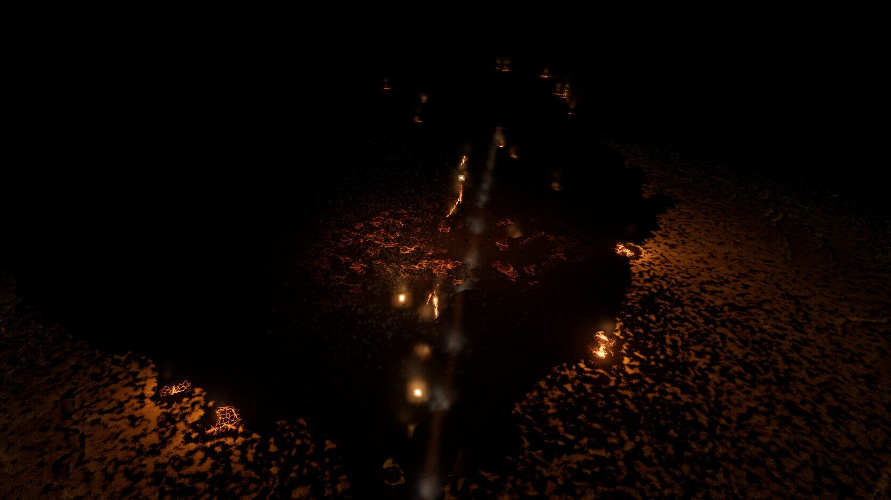

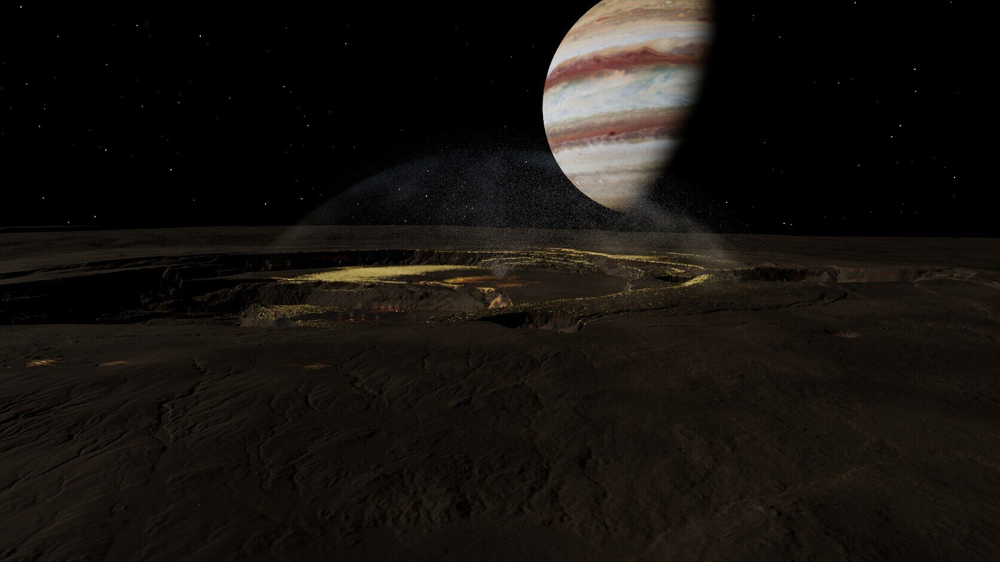

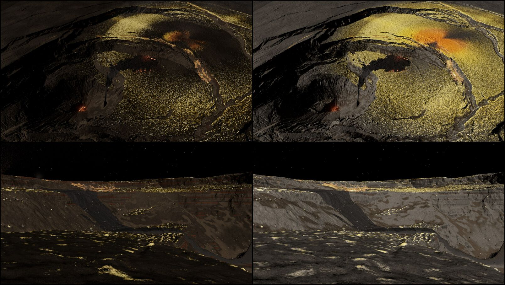

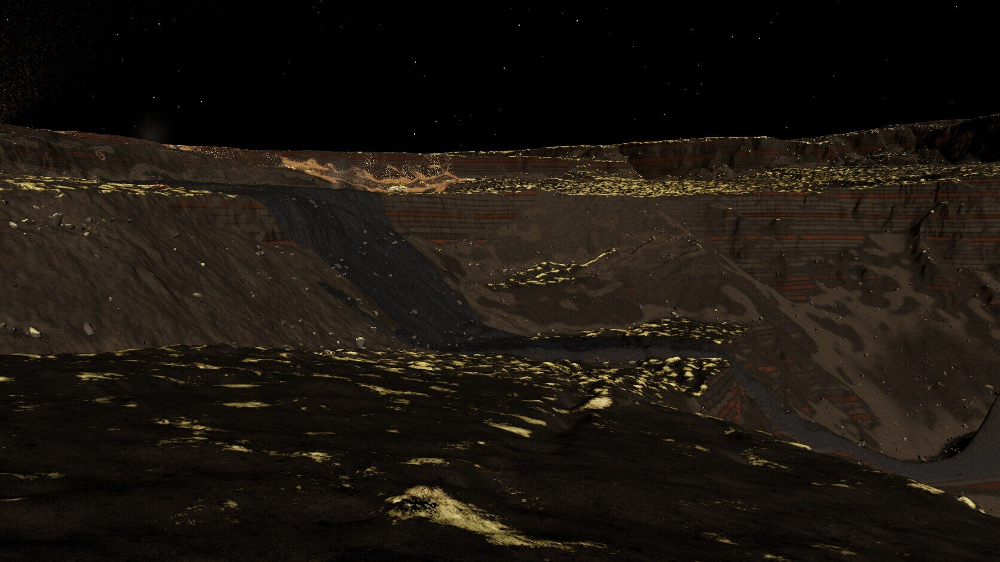

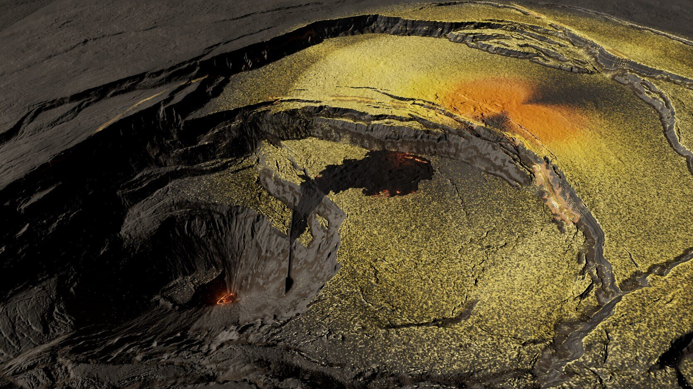

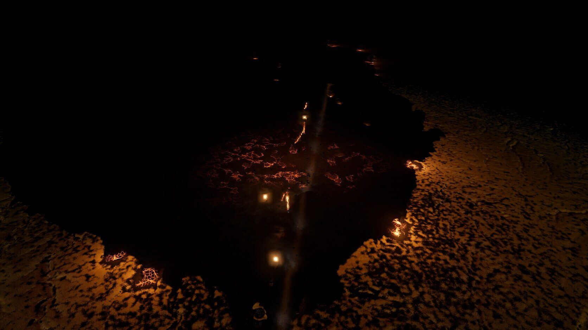

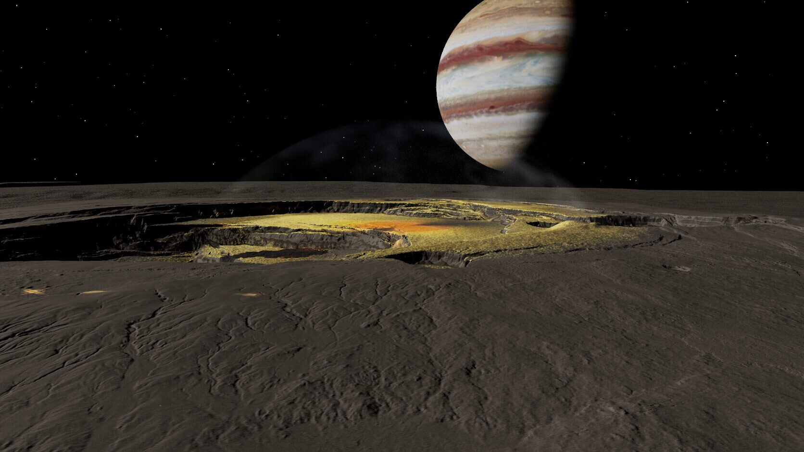

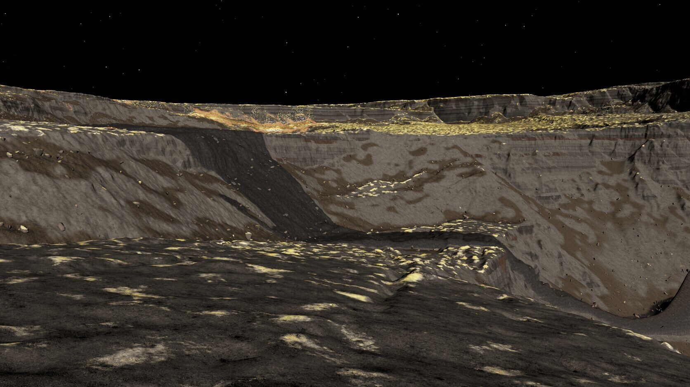